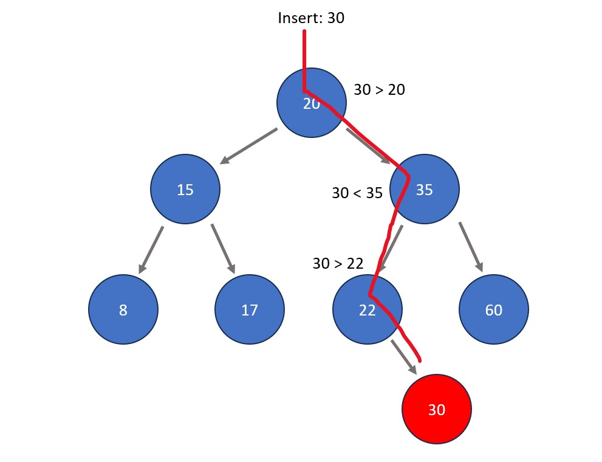
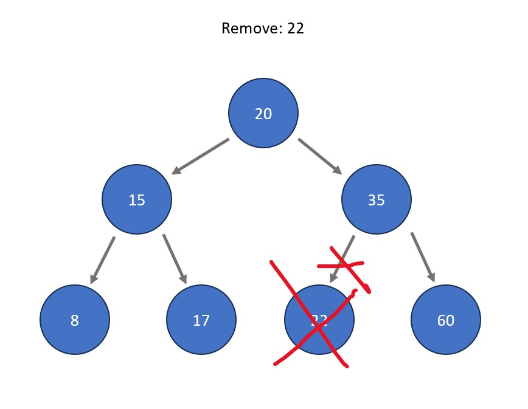
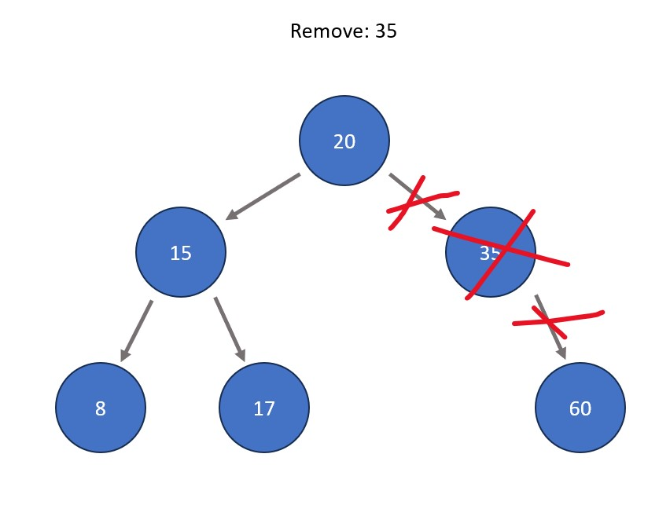
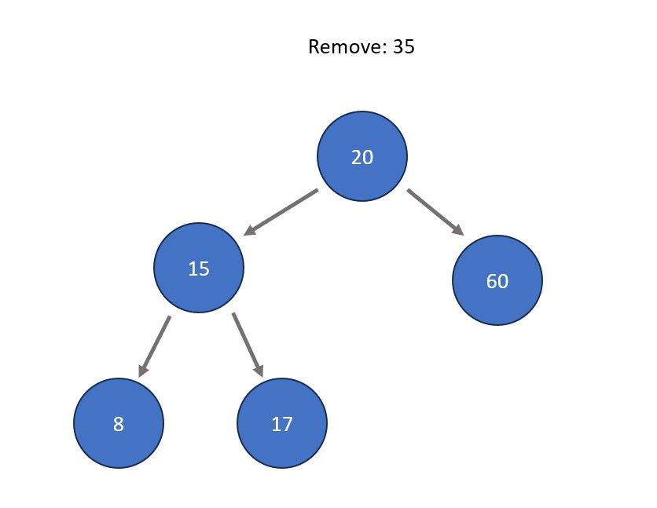
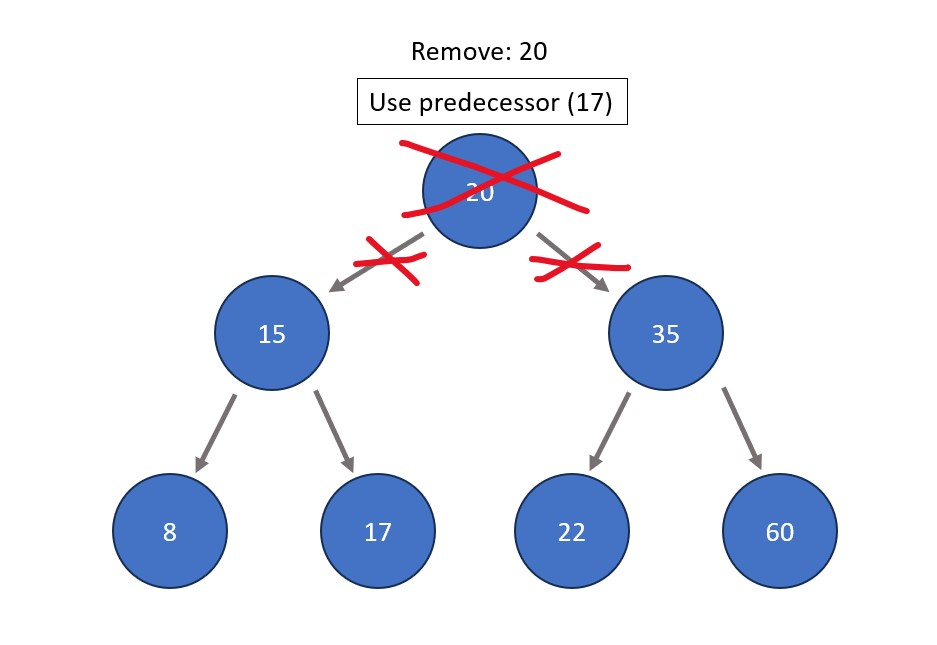
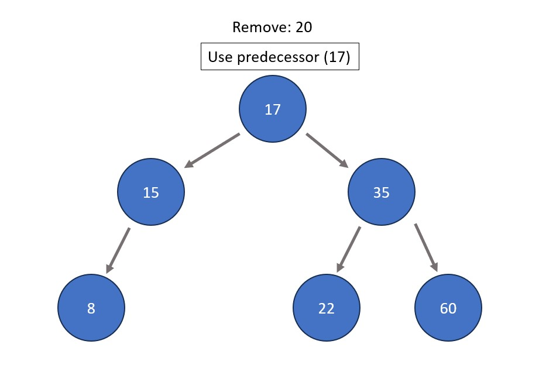

Definition:
A binary tree in which all values to the bottom left of each individual node are
less than it and all values
to the bottom right of each individual node are greater than it. In the picture above, all values to the bottom left
of 20 (15, 8, 17) are less than 20, and all values to the bottom right of 20 (35, 22, 60) are greater than 20. This
is true for any node in question.
Real Life
Example:
Imagine that you are golfing. Everytime you hit the ball, you are aiming to get the ball in the hole, meaning that
you are adjusting which direction you are hitting based on where your ball previousy landed. For example, if I
know that the hole is to the right of where I am standing, I will hit it in that direction. If I overshoot, then I
know I need to hit left. This calculation and resulting readjustment continues until I get the ball in the hole
(the equivalent of finding your target in a BST). In summary, reaching the target is a result of multiple step by
step comparisons that narrow down the end target.
Basic Properties (See operations section below for applications):
Node: An individual piece of data in a tree. An example is the blue circle with a 15 in it in
the picture above.
Root Node: The top node in a tree where all other nodes diverge from. 20 is the root node in the
BST above.
Parent/Child Node: A parent node has at least one node connected directly below it. A child node
is a node directly below a parent. In the BST above, 35 is a child node to 20 but also a parent with child nodes
22 and 60.
Edge: An arrow that connects a parent node to its child node(s).
Leaf Node: Any nodes that have no child nodes. 8 is a leaf node in the BST above.
Successor: The node of least value out of all nodes to the bottom right of the given node. In
the BST above, 20's successor is 22.
Predecessor: The node of greatest value out of all nodes to the bottom left of the given node.
In the BST above, 20's successor is 17.
Subtree: A smaller tree within the initial BST that starts from a parent node besides the root
node.
Height: The number of direct edges from the root node to any node given. The height of 8 in the
BST above is 2.
Basic BST Operations:
Inserting a node. This is done by
starting from the root node and comparing the value of the new node (less than or greater than) to the current
node. After a comparison has been made, the node moves in the appropriate direction down one level of the
tree. This process repeats until the new node is a leaf node, where it is finally placed in accordance with
BST properties.

Deleting a node. There are 3 possible
cases for this:
The node is a leaf node. In this case, the node is simply removed from the BST with no other actions
taken.

The node has one child. In this case, the node is removed from the BST and the child simply takes its
place.


The node has two children. In this case, the node is removed from the BST and its successor or
predecessor (see properties section above) replaces it.


Fun Fact: Similar to sets, BST's must have all unique data. No duplicate node values are allowed.
Commonly Used In:
Database search/retrieval.
System memory operations.
Efficient network routing.
Implementing other data structures.
Other Similar Data Structures:
AVL Tree: A binary tree that balances itself, ensuring that the tree is even in height at all nodes
(this optimizes speed of search).
This means rotating sections of the tree if difference in total height (# of total levels) between any two
subtrees is greater than 1.
Red-Black Tree: Another self-balancing binary tree with very specific properties related to color
designations and rotations.
Treap: A binary tree that contains two values per node: a key that reflects BST format and a priority
value that reflects heap format. This is in order to ensure balance and ease certain data retrieval
operations.
B-Tree: A self-balancing tree that allows nodes to have more than two children. Each node contains a
sorted list of keys.
B+Tree: A B-Tree where leaf nodes store key/value pairs.
Trie: A tree where each node consists of a single character. As you traverse down the tree in
different orders, you form words from the characters.
Splay Tree: A type of self-adjusting BST where recently accessed nodes are moved upwards to reduce
search times.